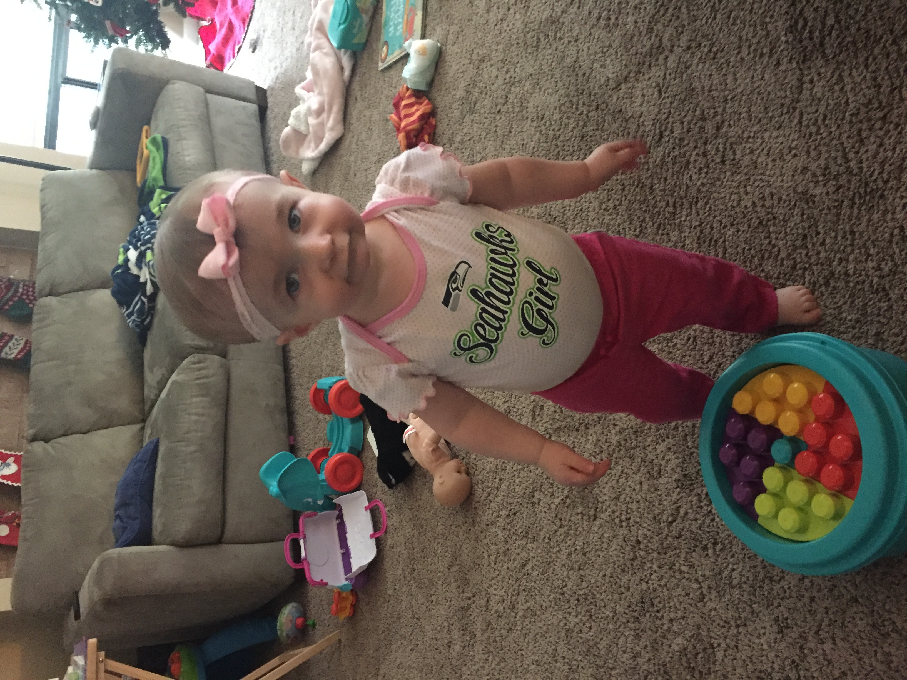
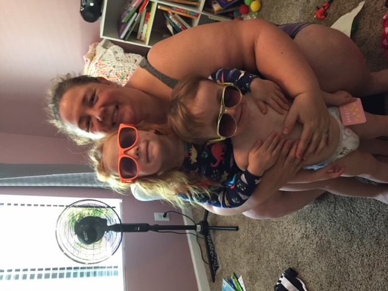
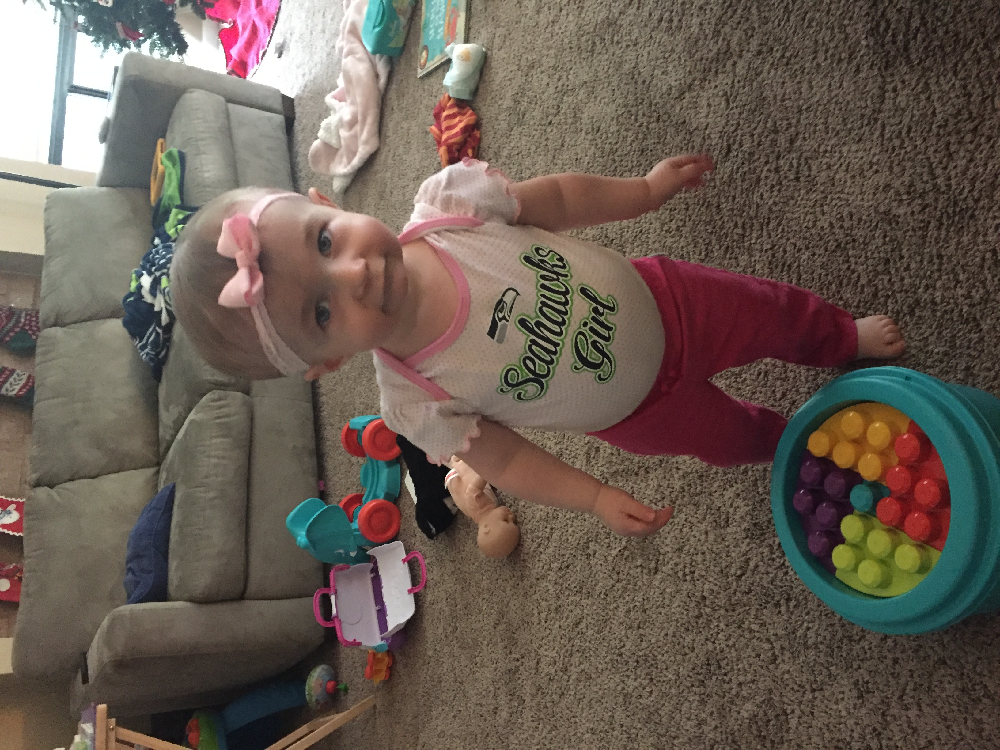
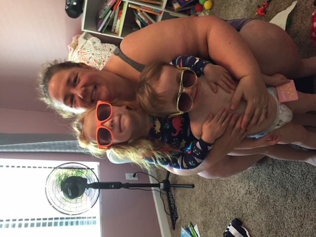
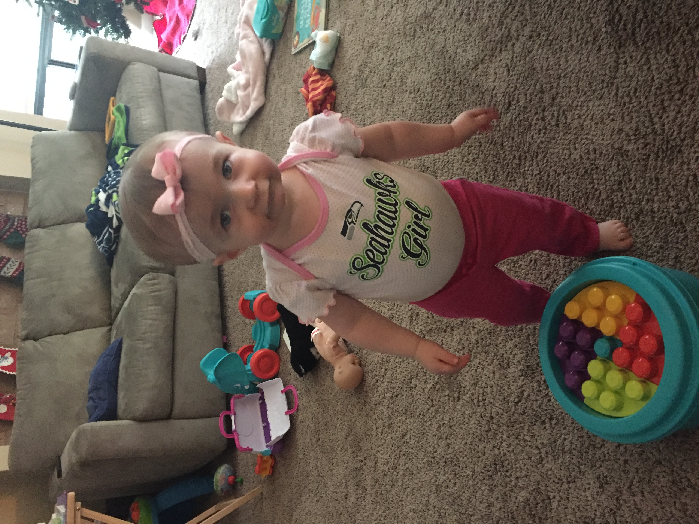
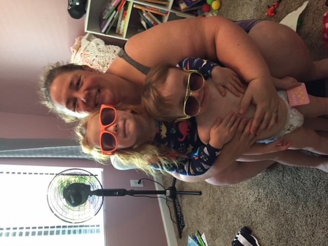
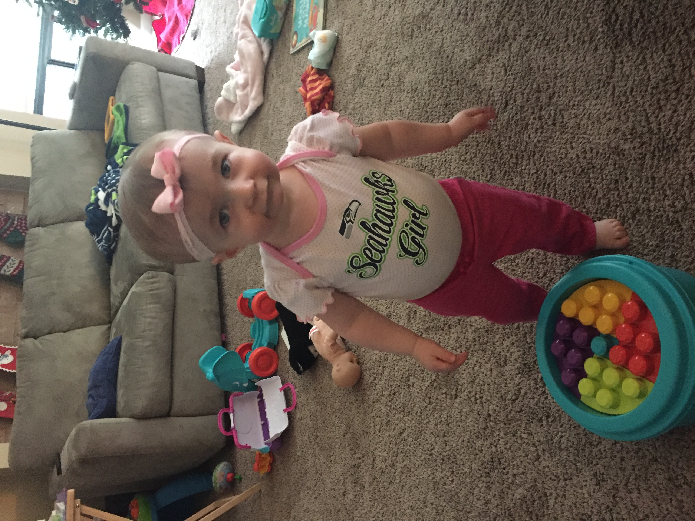
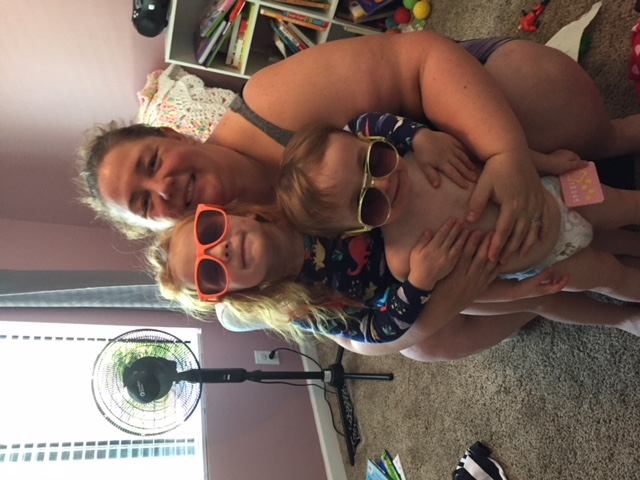

This is a song that reminds of those first few sleep
deprived months of paternity leave. Don't read too
much into the lyrics as they don't exactly fit the vibe
Why wasn't there a test? I feel like there should've been a test or at least some kind of certification process in order to let us take this thing home. Is it possible to stay one more night surrounded by season hospital staff and millions of dollars worth of medical equipment? What do we do when we get home? Just exist? I managed to keep myself alive for 33 years so maybe that is something I have in my corner. We spent months attending the labor and early parenting courses, reading the books (how big of a racket is a book full of names?), buying the products and making the necessary adjustments. When it happens and you pull away from the hospital for the first time, all that stored knowledge and the confidence obtained through it starts to quickly wain. I just had to start "acting as if" and hoping for the best.
Well this is it. I am a dad(x2). Years after this undeniable fact, it still seems surreal. The challenges come from a fear of
the unknown and a perpetual feeling as though I could or should be doing it differently. I learned rapidly that there are no
shortage of opinions on how a child should be raised...and I mean NO shortage. No matter what anybody tells you, it is a
humbling experience to be a father. You have to be our own biggest critic and simultaneously self assured enough to push
forward everyday and not live in regret.
How can something so small have such a tremendous impact? I suppose people have said the same about bullets, viruses and pills
for years...but you get my point.
When you set out to get a degree... study hard, spend some time crying and eventually if you persevere you will come
out of the other side having a sense that you did accomplished something and are rewarded with a cut-and-dry symbol of what you
did.
When you set out to find a significant other...choose wisely, spend some time crying and eventually if are authentic enough you
will come out of the other side having a sense that you are loved enough by another for them to want to share your life path and
are rewarded with a cut-and-dry symbol of what you did.
When you choose a career...demonstrate your value ongoing, spend some time crying and eventually if you show that you are capable
enough you will come out of the other side with a cut-and-dry symbol of what you did.
When you have children...nobody hands you a diploma, ring or check. The old plant test of "Is it still alive?" is not nearly enough.
What they don't tell you:
1. Your kids absorb everything you say even when they can't articulate much themselves. Go ahead...try to get her to say daddy.What happened? A blank stare? Now go ahead and accidentally let a curse word slip. How quickly was it before that one was parroted back to you? You live in an ignorant state for several months when your child can't crawl and can't speak. Unfortunately there is no magical marker as to when they will start to pick up what they hear and see. You tend to find out after the fact that they understand you. Then you have to try to tell them to talk...but not like you. The first time you say something along the lines of "Let's go outside" and your toddler walks to the front door...is the moment that you realize you have to watch what you say and immediately inventory the recent past for what you have already said.
2. You will have to explain things that you never thought you would have to explain. Not only must you do this, you must do this without using even a moderately complex vocabulary. Have you ever had to explain how a plane flies without getting into what a turbine or propellor is? Have you ever had to actually explain how an apple grows on a tree? Did you ever think that you would have to present a logical and concise argument as to why people need to put on clothes in order to go out in public? All these inquiries and many, many more await the parents of a speaking child. I spent some time in Thailand after college. I was asked for assistance by a young woman who spoke primarily Thai (shocking I know). She handed me a piece of paper and on it was written "waiting for the other shoe to drop". She spoke very limited English and wanted me to explain what this meant, as it had been said to her by an associate. Try explaining that without without using more than two syllable words. It is like that. 3. You cant apply logic and rational thought to a 3 year old. To date, i'm pretty sure the score is Hannah 481, Daddy 0 when it comes to arguments (see chart below). There being no official moderator, it is hard to determine a winner. I would like to think that I rule the roost, but at the end of the day I have to look at the fact that they pay no bills, and have me as a butler to cook for and clean up after them. Who is really in charge here? Just today I was told that she refused to eat a croissant because it was cut in half. A simple argument of "well eat this and if you finish it then you can have the other half" didn't fly. It was a whole croissant or the highway. Needless to say, I chose not to fight that battle and simply gave her the whole croissant. Have you ever witnessed someone have a complete meltdown because you grabbed something off the top shelf for them and caused a federal case because "mommy was supposed to do it". I have.| Argument Participant | Arguments Won | Arguments Lost | "Agree to Disagree" |
|---|---|---|---|
| Hannah | 481 | 0 | Yeah right |
| Allison | 130 | 0 | Keep dreaming |
| Erin | It really and truly depends on who you ask | ||
| All but me | 611 | 0 | Well... |
I hope to be a parent that my parents would be proud of. All any parent can hope for is to give them all that they were given and more. Looking at my own life, I picked up a lot of my values, aspirations and general outline simply from growing up in the home that I did. My parents were never the "sit down son, we have some advice for you" kind of people, but were able to make a larger impact by their actions instead. They are incredible parents and I owe my life to them (yeah obviously, but I mean it in a deeper sense than that). We all see the world through our own set of lenses and we do the best that we know how. I once read that the single biggest determinent of how a child will turn out is simply how you live your life. All of the extracurricular activities, fancy schools, and financial support are great. By all means, lay those on in spades if they are feasible. Just know that your children's ability to see the world is shaped so much by how you saw it and presented it to them. I strive to be a parent that my children would want to be. Being a father is hard work. Though the hours are crummy (24/7), the pay is lousy ($0 USD), and the bosses seem to lack empathy...I couldn't have asked for any other job. A good determinent of whether something hard is worth doing or not, is if that task makes you want to step up and be a better you. I strive to be a better me each day and I have the look on their adoring (sometimes screaming, sometimes pouting, sometimes covered in yogurt) faces to thank for that.So far Child Protective Services isn't involved and my kids have all of their limbs. I am that much closer to a "World's Greatest Dad" mug.
Not the best fatherhood blog you've ever read? Here are some guys that have arguably done it better
Dad and Buried by Mike JulianelleStill think the grass is greener elsewhere? Hit the web and try to find better
I have an amazing wife. Without her none of this would be possible